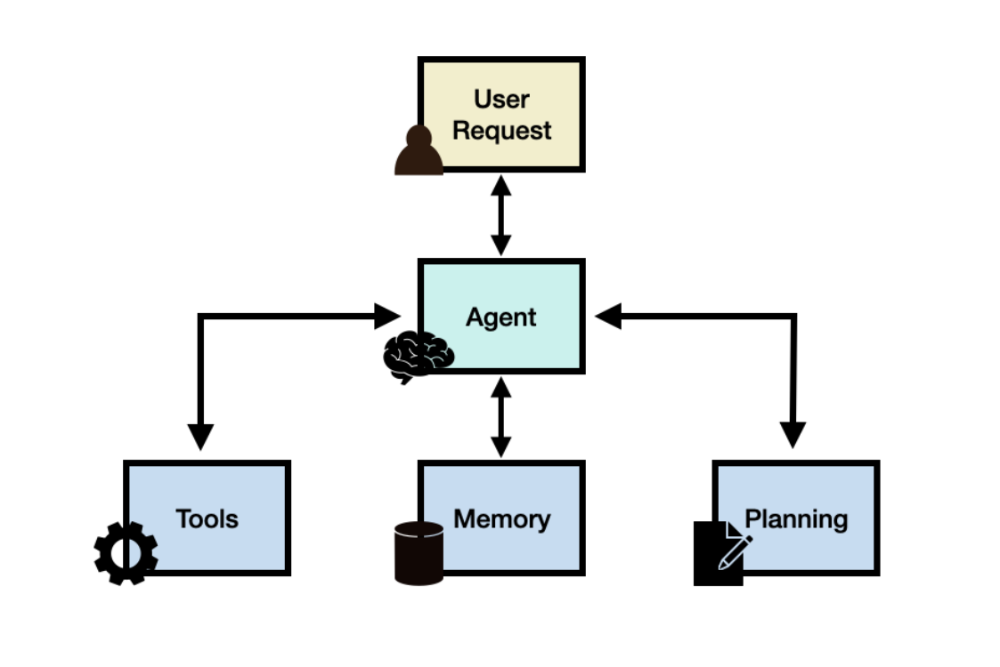

Agent 架构
在理解了 AI Agent 的基本概念之后，我们需要进一步了解 Agent 在系统层面是如何运行的。从工程实 现角度来看，一个完整的 Agent 系统通常由 大语言模型、工具系统、执行环境以及任务循环机制共同 组成，其中大语言模型负责推理与决策，而工具系统则负责执行具体操作。 在实际应用中，大多数 Agent 系统都会遵循一种类似的运行流程，即：先理解用户请求，然后进行推 理分析，再决定是否调用工具，并根据工具返回结果继续推理，直到最终生成答案。这种运行方式可 以看作是一种 循环推理与执行的架构模式。

典型的 Agent 架构流程如下：
| 代码块 |
|---|
User Input1 |
| ↓ 2 |
LLM Reasoning3 |
| ↓ 4 |
Tool Selection5 |
| ↓ 6 |
Tool Execution7 |
8 ↓ 9 Observation 10 ↓ 11 Final Answer
这一流程看似简单，但实际上构成了绝大多数 Agent 系统的核心运行逻辑。下面我们逐步解释每一个 环节在系统中的作用。
User Input
Agent 的运行始于用户输入。用户可以通过自然语言向系统提出问题、描述需求或者给出任务目标。 例如：
-
查询订单状态
-
生成一份数据分析报告
-
帮我总结一篇论文
-
查询数据库中的客户信息
在这一阶段，系统会将用户输入作为 上下文信息（Context）发送给大语言模型。对于复杂系统来 说，还可能同时提供额外信息，例如历史对话记录、用户身份信息、系统提示词（System Prompt） 以及可用工具列表。
这些信息共同构成了 Agent 的推理上下文，使模型能够理解当前任务环境。
LLM Reasoning
在接收到用户输入之后，大语言模型会进入 推理阶段（Reasoning）。这一阶段是 Agent 的核心，因 为模型需要判断当前任务应该如何完成。
模型通常会思考以下问题：
-
用户真正想要完成的任务是什么
-
是否需要调用外部工具
-
如果需要工具，应该选择哪一个
-
是否需要多步操作才能完成任务
例如，当用户询问“我的订单什么时候发货”时，模型会意识到这个问题需要查询订单系统，而不是 直接生成文本回答。
因此，在 Reasoning 阶段，模型并不会立刻给出最终答案，而是先进行任务分析，并为下一步操作做 出决策。
Tool Selection
当模型判断任务需要借助外部能力时，就会进入 工具选择阶段（Tool Selection）。
在现代 Agent 系统中，通常会为模型提供一组可调用的工具，例如：
-
搜索工具（Web Search）
-
数据库查询接口（Database Query）
-
向量数据库检索（Vector Retrieval）
-
代码执行环境（Code Interpreter）
-
业务 API（订单系统、CRM、工单系统等）
-
模型会根据任务需求，从这些工具中选择最合适的一个。例如：
-
查询知识 → 调用 RAG 检索工具
-
查询订单 → 调用订单 API
-
计算数据 → 调用代码执行工具
这一过程通常通过 Function Calling 或 Tool Calling 的方式实现。
Tool Execution
在确定工具之后，系统会执行对应的工具调用。此时 Agent 框架会根据模型生成的参数去调用真实的 接口或程序。
例如：
-
向数据库发送 SQL 查询
-
调用 REST API 获取订单信息
-
在 Python 环境中执行代码
-
从向量数据库中检索相关文档
-
这一阶段的执行通常由系统代码完成，而不是由大语言模型直接执行。
-
工具执行完成后，系统会返回执行结果，例如：
-
查询到的订单状态
-
检索到的知识库内容
-
代码运行结果
-
API 返回的数据
Observation
工具返回结果后，Agent 会进入 Observation（观察）阶段。在这一阶段，工具返回的数据会被重新 输入到大语言模型中，作为新的上下文信息。
模型需要基于这些信息继续进行推理。例如：
-
如果信息已经足够，就生成最终答案
-
如果信息不足，则继续调用其他工具
-
如果需要多步操作，则进入下一轮推理
这一机制使得 Agent 可以进行 多轮推理循环（Reasoning Loop），直到任务完成。
例如：
用户问题 → 查询数据库 → 获取数据 → 分析数据 → 生成报告 整个过程可能包含多次工具调用和多轮推理。
Final Answer
当模型判断任务已经完成时，就会生成 最终回答（Final Answer）。这个回答通常会整合所有工具执 行结果，并以自然语言的形式返回给用户。 例如：
用户：我的订单什么时候发货？ Agent：您的订单已于今天下午 3 点发货，预计两天后送达。 在复杂任务中，最终输出也可能是：
-
一份数据报告
-
一段代码
-
一个工单编号
-
• 一个任务执行结果
因此，Final Answer 并不仅仅是文本，而是整个 Agent 系统任务执行的最终结果。
Agent 架构的核心特点
通过以上流程可以发现，Agent 架构与传统 LLM 应用最大的区别在于：系统不再是单次生成，而是形 成一个“推理—行动—观察”的循环结构。 这种架构具有三个重要特点： 第一，模型负责决策，而系统负责执行。大语言模型只负责思考和选择工具，真正的执行由系统完 成。 第二，任务可以分解为多个步骤。Agent 可以通过多轮推理逐步完成复杂任务，而不是一次性生成答 案。 第三，系统可以不断扩展能力。只要增加新的工具接口，Agent 的能力就会随之提升。 正因为这种架构具有极强的扩展性，所以它已经成为当前 AI 应用系统设计的主流模式。许多知名框 架，例如 LangChain、AutoGPT、OpenAI Agents、CrewAI 等，都是基于类似的架构实现的。